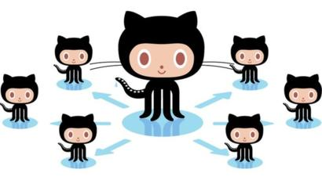

¿Que es Git?
Git, es un software de control de versiones diseñado por Linus Torvalds. La pregunta es ¿qué es control de versiones?
Control de versiones es lo que se hace al momento de estar desarrollando un software o una página web. Exactamente es eso que haces cuando subes y actualizas tu código en la nube, o le añades alguna parte.
Es un diario de todo lo que paso en la vida de un proyecto y quien lo hizo.
¿Que es Github?
GitHub es una página que ofrece un grupo de servicios que facilitan el uso de Git, como por ejemplo hosting de proyectos, facilidades de colaboración, reviews de código, perfiles personales, pull requests, issues, etc.
GitHub es la plataforma de “hosting” de los proyectos. Una comunidad llena de personas que desarrollan y comparten, usando GIT.

¿Es necesario trabajar con Git?
Aprender Git no es complicado. En este mismo artículo aprenderemos 4 pinceladas para utilizar lo básico. Pero ciertamente, como cualquier software, tiene una curva de aprendizaje a la que debemos enfrentarnos. ¿Hasta qué punto es rentable el tiempo que voy a dedicarle al aprendizaje de Git? Esto dependerá de cada uno, de las necesidades y del trabajo que se esté desarrollando.
Si eres un trabajador freelance y estás acostumbrado a trabajar solo, quizá Git no sea tan necesario. Quizá hacer copias manuales de tus archivos te haya funcionado hasta ahora y eso está bien. Pero si realmente estás interesado en evolucionar como profesional te interesa utilizar Git. Trabajar con esta herramienta te permite organizar mejor tus trabajos y evitar riesgos innecesarios. Podrás trabajar sin miedo a perder tu progreso. Así, si te cargas el código podrás recuperar la última versión al instante.
Si trabajas en equipo no hay dudas. Git se vuelve imprescindible. Los miembros del equipo podrán saber qué cambios se han hecho y quién los ha hecho. Podrán solucionar conflictos si dos personas trabajan en el mismo código. Y lo más importante, evitaremos borrar el trabajo realizado por un compañero. Ya veréis que si salís a buscar ofertas de trabajo tanto de front-end como de back-end os pedirán que controléis de Git, ¡así que pongámonos a ello!